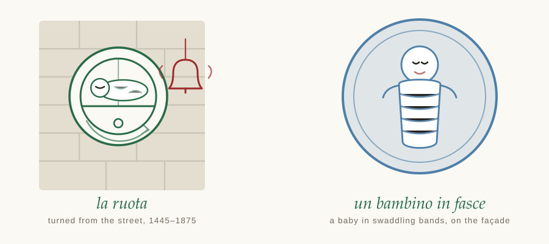

ICU and You · L'angolo italiano · Number 1
The Italian of this week's subject — and a loop that takes 545 years to close
The care of newborns has a second founding place, and it is a great deal older than the zoo.
In 1419 the Silk Guild of Florence commissioned Brunelleschi to design a hospital for abandoned children. It opened on 5 February 1445, and the first infant received was a girl, given the name Agata Smeralda after the saint of that day. On the façade, Andrea della Robbia's blue-and-white roundels of bambini in fasce — babies in swaddling bands — still look down at the piazza.
Beside the entrance was la ruota: a wooden cylinder set into the wall, turned from the outside, fitted with a cord and a bell so that someone within would know a newborn had arrived and the child would not be left long in the open. It stayed in service until 30 June 1875 — four hundred and thirty years.
Two things about that arrangement deserve an intensivist's attention. The bell was a thermal intervention: warmth was understood to be urgent in 1445. And the infants were handed to balie, wet nurses — first within the house, then in the countryside — who were paid to breastfeed them. Warmth and feeding. The same two problems Budin would argue about four centuries later, and the same two this week's mind map opens with.

Children left at the wheel were afterwards esposti — exposed — in the Piazza del Duomo, so that a Florentine family might take them or a parent who had changed their mind might return. From that comes the surname Esposti, as Innocenti comes from the hospital itself. An entire family of Italian surnames means, in plain translation, abandoned.
The newborn nursery in an Italian hospital is il nido — the nest. Set that beside the French couveuse, the brooder, and you have two languages that both reached for birds where English reached for nobody in particular.
The same trap waits here as in French. La rianimazione is intensive care, not resuscitation, and a neonatal unit is la terapia intensiva neonatale. Jaundice, meanwhile, is l'ittero — from the same Greek root that gives the French ictère, while English alone kept the old French word for yellow.
UNICEF's research centre has occupied the building since 1988. And from 30 July to 1 August 1990, in those same rooms, the World Health Organization and UNICEF held a policymakers' meeting called Breastfeeding in the 1990s: A Global Initiative, and produced what is still known as the Innocenti Declaration. World Breastfeeding Week, every first week of August, commemorates it.
Five hundred and forty-five years after the Silk Guild started paying women to feed foundlings in that building, the world's health ministries met in it to agree that breastfeeding was a global priority. The wheel is gone; a plaque marks where it stood.
Which hospital do you work in, and what does its name actually mean?
Most of us have stopped hearing it. Some are named for saints, some for benefactors, some for a landscape that has since been built over — and occasionally for something nobody has thought about in a century. Send me yours, and any other medical word in any language that has turned out to carry more than it looked like carrying.
The button opens a reply straight to me. If your device blocks it, write to icuandyou@icloud.com instead.